Cartier Office Building
Fall 2011 studio work
The Cartier Korea branch building is planned to be a new landmark in the Gwangalli skyline. This diagonal building built in a simple, dynamic and geometric shape presents a striking contrast to its surroundings. 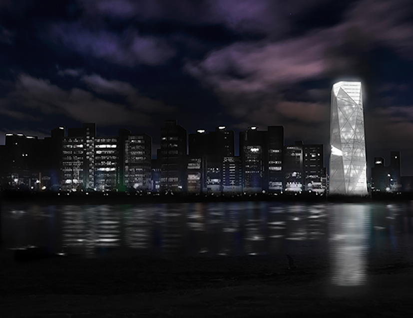 The urban area of Gw- angalli in Busan is surrounded by various nature, such as mountains, beaches, and parks. However, most of the build -ings located in Gwangalli are box-like shapes that only face the beach.
Having different spaces on each floor plan creates a more unique system, rather than a typical office tower.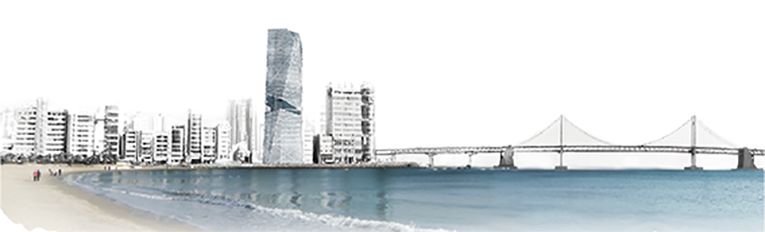 In addit- ion, the atrium serves as a buffer zone that provides employees with a healthy and pleasant interior workplace to promote performance.
I designed the Cartier Korea building in an iconic and refined manner, focusing on a variety of aspects related to the site.
It is not only possible to see a variety of scenery from the building, but the building and its various forms can also be recognized from many spots.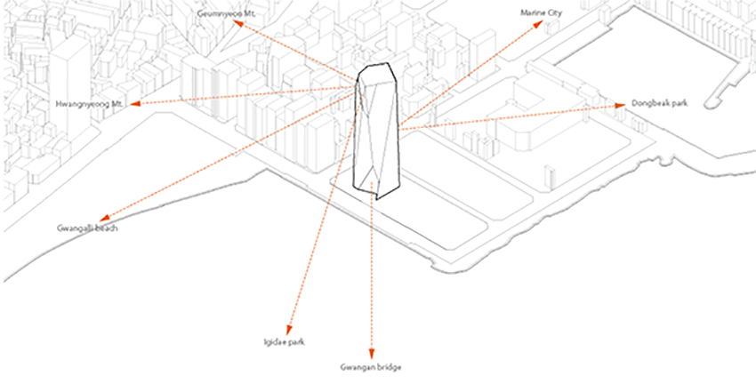 The Cartier Korea building symbolizes the image of Cartier, and its design was inspired by a gemstone, the main material of most Cartiers products.
Gemstones have specific characteristics regarding the reflection and refraction of light, and look different depending on these factors. I reflected on the nature of gemstones and came to some basic conclusions:
1. The more sides a figure has, the more angles it interacts with.
2. Jewelry that has various facets can interact with light from various angles.
Based on these conclusions, I designed the mass of the building through a) the principle of a polygon and b) the various facets of jewelry.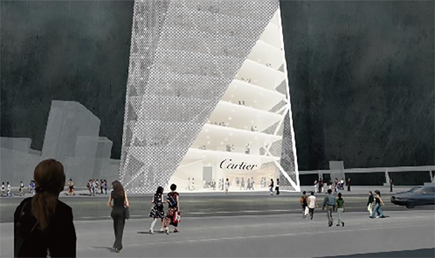 The facade of the Cartier building is not composed of rigid boxes like other buildings in Gwangalli, but of flexible, dynamic and changing faces.
Having different spaces on each floor plan creates a more unique system, rather than a typical office tower.
As time passes, the elevation appears to constantly change; it is sometimes calm and vague, and sometimes elaborate and distinct.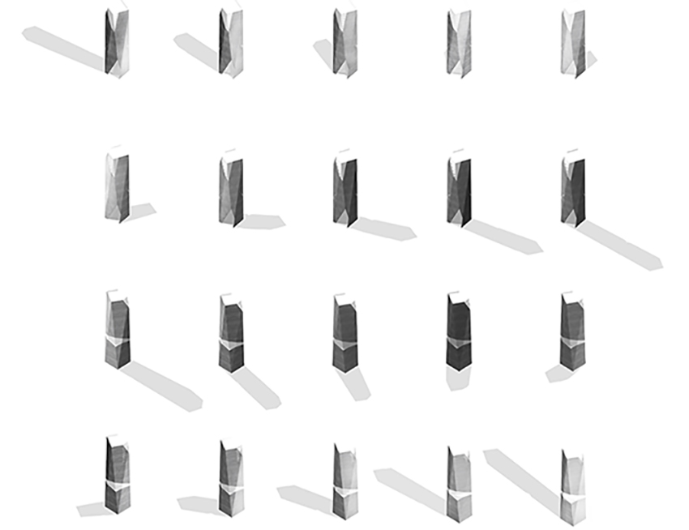 The volumetric variation of the building changes according to the season, time of day, point of view, and light. The intent of this volumetric variation is to strengthen the visual artistic expression, which makes the building a unique focal point in Gwangalli.
I made an open facade, which allows natural light to penetrate the building, much as gemstones transmit light.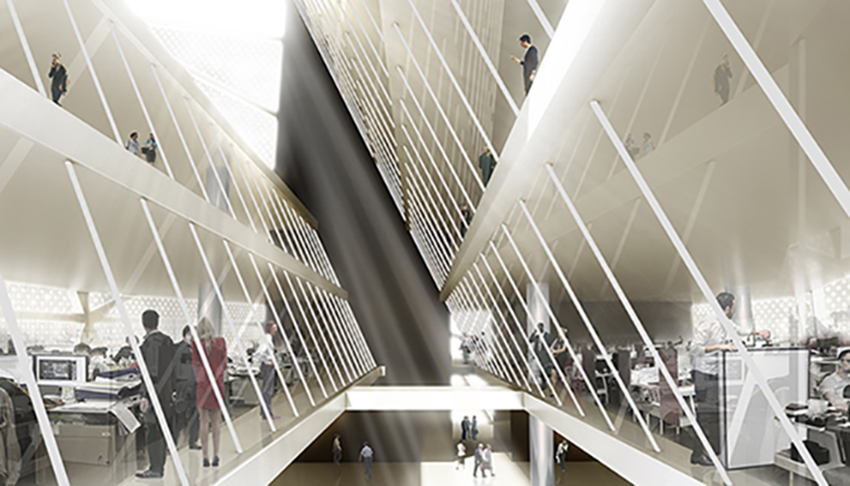 Moreover, each of the void spaces has its own function. They act as atriums, providing light and dramatic space and encourages users to interact, which makes the building highly valued for its pleasant working environment.
The tower was finished with punching metal. This enables an exposure to sunlight and a maximum of privacy at the same time. In addition, the material reflects and diffuses the light, so people can recognize the image of Cartier solely from its facade.
Hialeah Art Center
Fall 2010 studio work
On August 10th, 2006, Camp Hialeah was formally returned to Busan Metropolitan City and was opened to the public in April of 2010.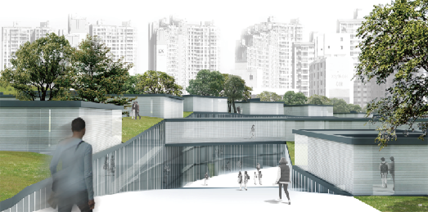 Camp Hialeah is a former Imperial Japanese Army base and United States Army camp located in the Busanjin district of the city of Busan, South Korea. The camp was closed and stopped in its urbanization process for the last 100 years, while the city of Busan continued growing and eventually surrounded the camp, creating a kind of independent land within the city. Now, citizens have the chance to regain this land and its historic modern buildings.
The Renovation of Camp Hialeah project aimed to preserve valuable modern buildings and provide new places for the citys arts-based community.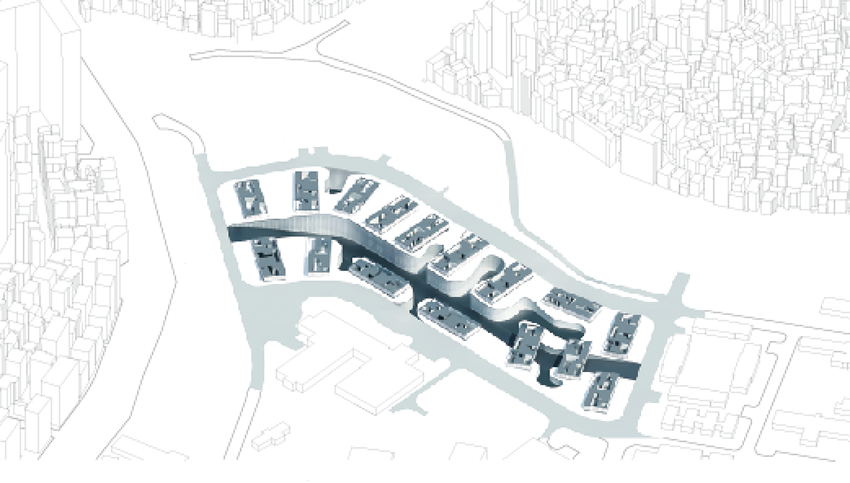
In contrast with the surrounding dense high-rise buildings, the camp contained single story buildings spread sparsely. This distribution opened the possibility that the camp could become a park for citizens. Therefore, I planned to make underground spaces so as to provide citizens with resting spaces (existing spaces) and community spaces (renovated spaces), while also preserving the modern buildings.
A main road across the site has two important functions: connecting the camp with the city and providing underground spaces for natural light. 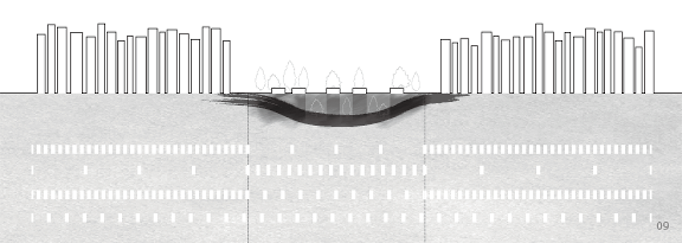The road connects with the main street of the city, which helps Hialeah to be absorbed in the city of Busan by providing easy access for people visiting it. In addition, it connects with the lowest floor, so it is possible for sunlight to penetrate into the interior space.
The existing buildings (military installations) will be turned into ateliers for artists, and underground spaces will be utilized for exhibitions.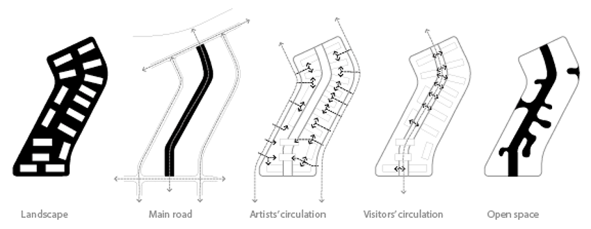 Since the existing buildings in Camp Hialeah were used for military purposes, most of them were rigid and closed. In contrast, I intended for the renovated spaces to have a more organic and open shape.
Organic-shaped open spaces were made in the spots of active communication and they serve as resting places for citizens. 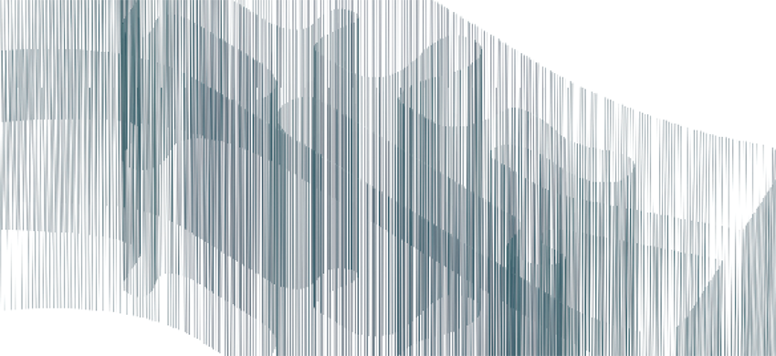
The old and new can work together, enabling people to reminisce about the old times and enjoy the new places. Organic-shaped open spaces provide under- ground spaces with warmth and light. The open places will be available for a variety of events, art performances, and galleries. These places are built to encourage active community participation among artists, perfor- mers and other citizens, which will help the camp in its transformation into a hub for communication and creativity.
Organic shaped open spaces provides underground spaces with warmth and light.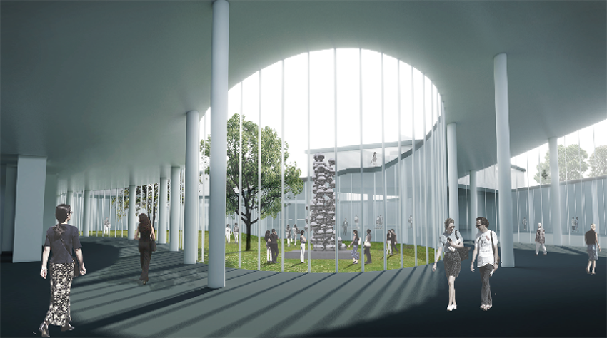 The open places will be available for a variety of events, art performances, and gallery. The places might encourage active community particiption of ar- tists, performer and any citizens, which might help the camp convert into communiction places.